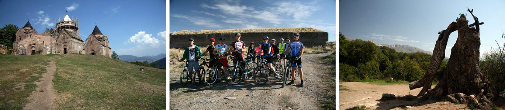
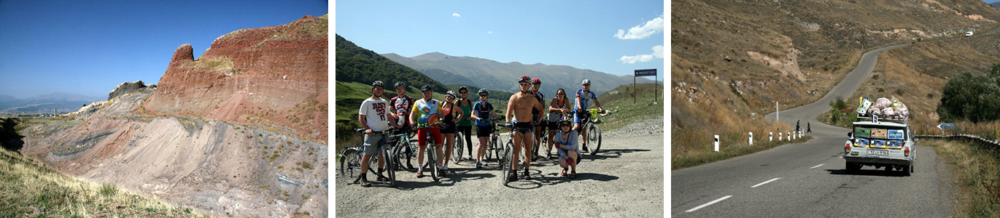
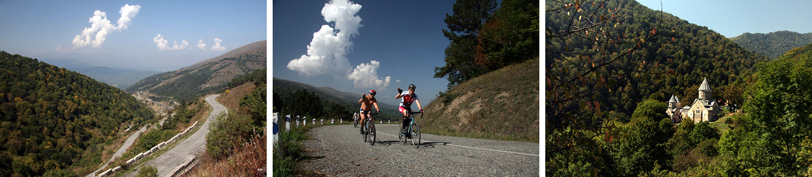
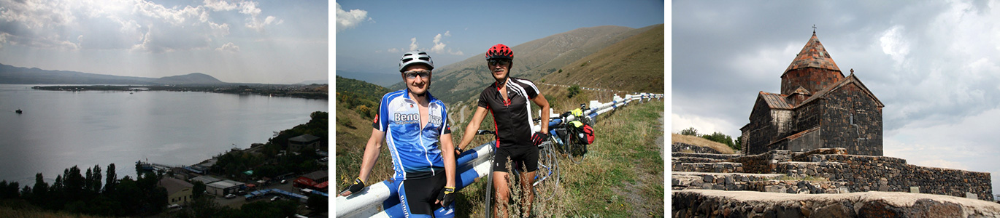
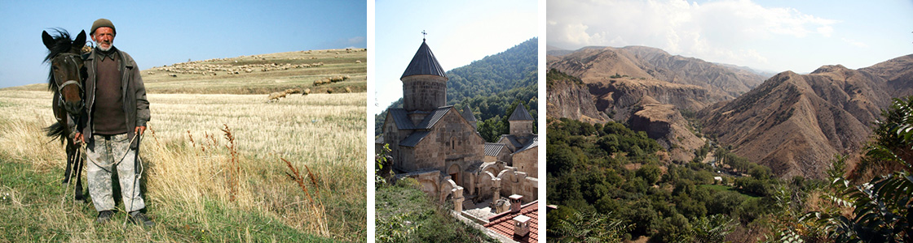

Представляем нашу новую программу по Армении. Это наш второй маршрут в этой стране. В отличие от первого, который посвящен замечательному озеру Севан, второй ориентирован, скорее, на западную часть Армении. Одной из изюминок именно этого маршрута будет не только природа Армении, но и часть истории, которая связана с Россией. Мы увидим остатки российских крепостей, другие постройки, сделанные во времена Российской Империи. Это очень интересно. Не менее интересны и улочки старинного армянского города Гюмри. Да, Ереван прекрасен, но это — столица. Она перестраивалась, менялась. А дух старой Армении сохранился в большей степени в Гюмри... Мы также увидим горы и долины, реки и монастыри, леса и луга...
Прилет в Ереван, трансфер в Гюмри. В этот день у нас останется время, чтобы собрать велосипеды, а также немного погулять по улочкам этого старинного города. Здесь сохранились старые русские крепости: Красный форт, Черный форт. Здесь несколько церквей, в том числе православная. Гюмри - один из самых, даже не сказать красивых, а таинственных городов Армении. Вы в этом убедитесь!

Мы садимся на велосипеды и покидаем город. Нас ждет 65 километров пути. Попадется небольшой перевал. Да, Армения — горная страна. Хотя наш маршрут по ней не является тяжелым. Мы проедем Спитак - город, который был разрушен страшным землетрясением 1988 года. Сегодня город отстроен заново. И далее наш путь лежит в Ванадзор. Это интересный город, который как бы зажат между двух гор. Это красиво. Удивительные пейзажи: рассеченные рекой горы, сама река, небольшая, но, видимо, трудолюбивая. Ведь именно она сделала такой пейзаж, который даже трудно с чем-то сравнить!

В этот день мы вновь поедем по интересным местам. Вновь ущелье, по дну которого вьется дорога. Дорога эта проходит через два села, с нехарактерными названиями для Армении: Фиолетово и Лермонтово. Это русские села, в которых живут потомки молокан. Молокане — это этнически русские люди, которые исповедовали христианство в своем, молоканском понимании. За это их преследовали вплоть до 19 века. В 1820 году было основано село Фиолетово (при основании было названо Никитино). Основали его ссыльные молокане из Тверской области. Так и живут, скоро 200 лет. Подробнее о них можно почитать, например, зарисовку вот тут Перед Дилижаном начнется, вероятно, самое лесное место на нашем пути. Склоны гор поросли тут лесом, вокруг – великолепные пейзажи, особенно золотой осенью.

В этот день мы совершим поездку к северу от Дилижана и на ночлег вернемся обратно. Мы поедем в монастырь Агарцин, а также заедем к горному озеру. Перед Агарцином, действительно, настоящий горный подъем. Конечно, кому сложно, тот может воспользоваться нашей машиной. С другой стороны, почему бы и не испытать себя? Большинство армянских монастырей стоят на высоких местах. И это здорово. Пока преодолеваешь подъем, поднимаешься над ущельем, меняется пейзаж, открываются все новые виды.

В этот день мы выйдем к озеру Севан и заночуем на его берегу. Севан — жемчужина Армении. Правда, вода в нем не слишком теплая. Все-таки, озеро находится на высоте почти 2000 метров. Кстати, на пути от Дилижана к Севану находится один из двух значительных подъемов на нашем маршруте. Самое красивое место на берегу Севана, пожалуй, это монастырь Севанаванк. Он располагается на горбатом мысу, который вдается в Севан. Сказочное место! День у нас короткий, всего 38 километров, поэтому, времени на посещение монастыря и прогулку у озера будет достаточно.

Мы спускаемся в Араратскую долину по ущелью Раздан. Это будет замечательный день, так как мы все время будем ехать вниз. Путь по ущелью — это длинный-длинный спуск на десятки километров. Иногда он совсем плавный, иногда немного круче. Но ехать все время немного вниз приятно. К тому же само ущелье красивое. Мы уже видели несколько ущелий за этот маршрут. Вроде бы, Армения очень маленькая. Вроде бы, все тут на пятачке. Но каждое ущелье немного свое. Немного другая природа. Вечером мы финишируем в Ереване, одном из самых колоритных городов региона, да и мира в целом.

В этот день у нас по плану отлет. Но если вы хотите, то можно задержаться в Армянской столице. Тут есть что посмотреть. Да и находиться тут хорошо: все люди приветливы, все говорят по русски.
NB. Данное описание - это план путешествия. Организаторы сохраняют за собой право на его изменение в зависимости от конкретной ситуации.
Стоимость маршрута можно уточнить на странице, там же можно подать заявку: Календарь.
В оформлении страницы испольованы фотографии из источников: bvictor.livejournal.com, armenia2u.com, anitour.am, findarmenia.ru, armenianchurch.org, panoramio.com, dproc.ru,
{/block}